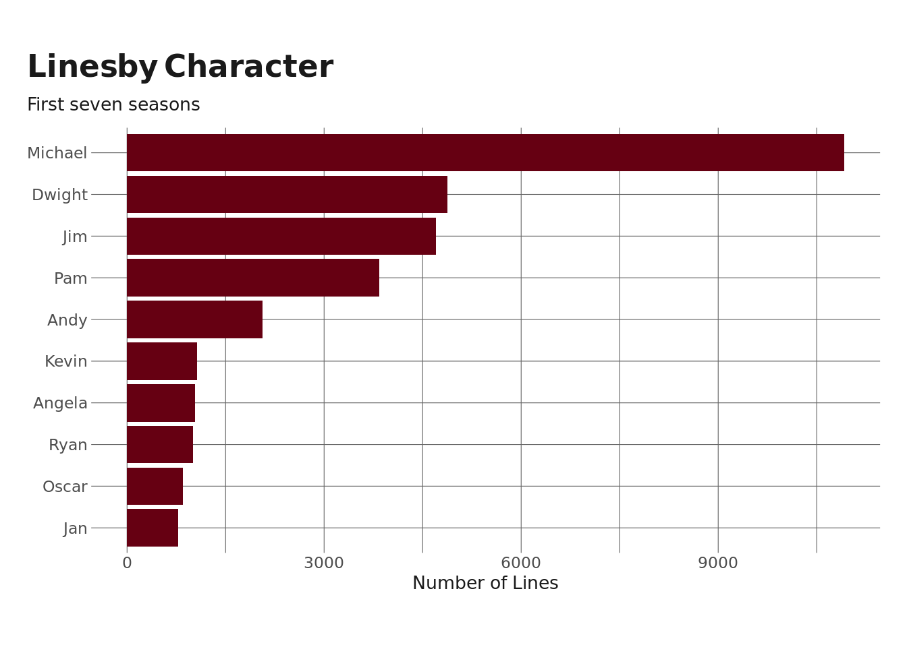
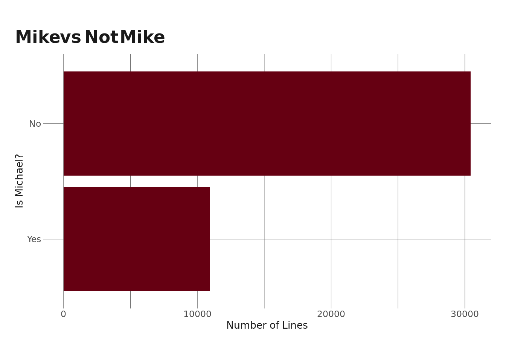
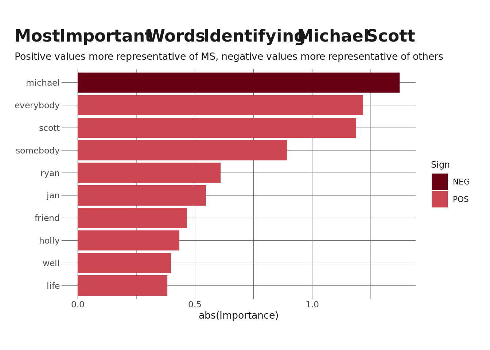
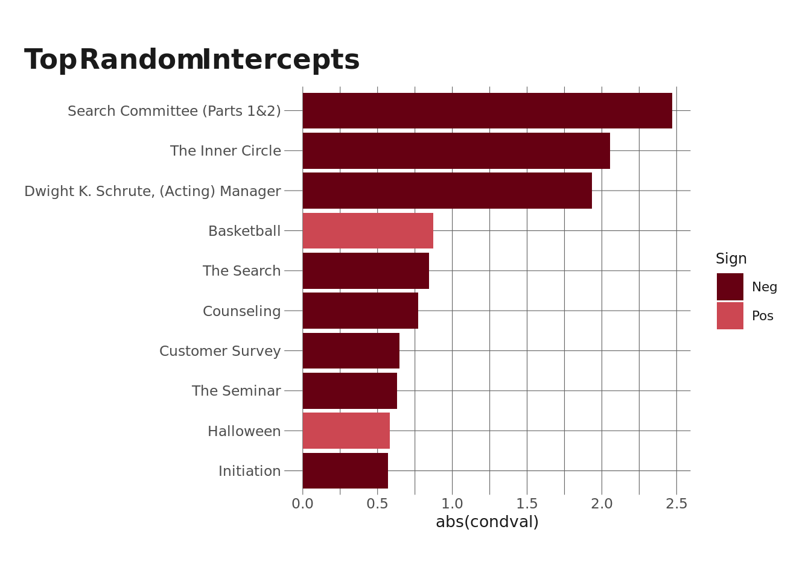

knitr::opts_chunk$set(echo = TRUE, warning = FALSE, message = FALSE)
library(tidyverse)
library(eemisc)
library(tidymodels)
library(schrute)
library(textrecipes)
library(themis)
library(vip)
library(glmmTMB)
herm <- harrypotter::hp(n = 1, option = "HermioneGranger")
opts <- options(
ggplot2.discrete.fill = list(
harrypotter::hp(n = 3, option = "HermioneGranger"),
harrypotter::hp(n = 5, option = "Always")
)
)
theme_set(theme_ee())
office <- schrute::theoffice %>%
filter(as.numeric(season) <= 7) %>%
mutate(is_mike = if_else(character == "Michael", "Yes", "No"))TL;DR:: In this blog, I use LASSO logistic regression and multilevel logistic regression to predict the speaker of lines of dialogue from The Office.
What feels like forever ago, I wrote two blog posts analyzing transcripts from The Office. The first was a basic EDA of the dialogue, and the second used k-means clustering to determine types of Office episodes based on who speaks to whom. At the end of that second blog, I mentioned that I might do some predictive analysis with that data in the future. Well, it’s four months later, and I’m declaring that the future is now!

Basically, the goal here is going to be, for a given line of dialogue from the show, to predict whether it’s Michael talking or someone else. At first blush, this seems like it shouldn’t be too hard. Many of Michael’s lines are iconic (e.g. see the above gif), but I feel like this might be more a function of the delivery than the actual words themselves, and I’m curious to see how well a model (or multiple models) could predict this just from the text.
In doing this, there are a couple of things I’m interested in doing here:
- Generally getting more practice with
{tidymodels} - Learning to use the
{textrecipes}package - Trying the
{glmmTMB}package (not part of the{tidymodels}ecosystem)
Also, before getting too much further, I want to acknowledge that I looked at this blog by Julia Silge and this blog by Emil Hvitfeldt for some background on {textrecipes}. Both are really great for people interested in text analysis.
Anyway, without much further ado, let’s get into it. As has been the case in all of my “Scrantonicity” posts, the data I’m using here comes from the {schrute} package. First, I’ll load in libraries and set some defaults/options. I’m also going to read in the data, limiting the dialogue to the first seven seasons of the show (the Michael Scott era).
Setup
Brief EDA and Data Preprocessing
Before modeling data, I would typically do a more thorough EDA. But I’ve already explored this data pretty closely (albeit months ago) in two previous blog posts, so rather than re-doing that EDA, I’m just going to look at those posts. One thing I will include here, though, is a quick look at the number of lines spoken by Michael Scott vs other characters, since this is the outcome I’m interested in predicting here.
office %>%
count(character) %>%
top_n(10) %>%
ggplot(aes(x = n, y = fct_reorder(character, n))) +
geom_col(fill = herm) +
labs(
title = "Lines by Character",
subtitle = "First seven seasons",
y = NULL,
x = "Number of Lines"
)
So, Michael has far and away the most lines of any character. But it’ll also be useful to look at Michael vs all of the others lumped together (since this is what I’m actually predicting).
office %>%
count(is_mike) %>%
ggplot(aes(x = n, y = fct_reorder(is_mike, n))) +
geom_col(fill = herm) +
labs(
title = "Mike vs Not Mike",
y = "Is Michael?",
x = "Number of Lines"
)
Even though Michael speaks more than any other given character, he speaks about a third as many lines as all of the other characters combined. This is relevant here because it means I’ll want to downsample when I train my model to ensure the number of observations in each class are similar, which will help the model fit.
Data Splitting & Preprocessing
Next, I’m going to split my data into a training a testing set.
set.seed(0408)
office_split <- initial_split(office, strata = is_mike)
tr <- training(office_split)
te <- testing(office_split)Now that I’ve split my data, I’m going to preprocess the data using {recipes}, {textrecipes}, and {themis} (to handle class imbalance). One thing to clarify here: I’m building a model to predict whether the speaker of a given line of dialogue is Michael. In this analysis, I want to build this model using only the text data, although there are plenty of other text-based features I could include. More specifically, I am going to handle the preprocessing such that the model I end up fitting is a bag-of-words model. This means that I want my data to include a variable for each word* (not really each word, but I’ll show later) in the transcript, each row to represent a line of dialogue, and the value in each cell to represent the tf-idf of that word. From this data structure, I can build a model where each word has an individual effect on the odds that the line is spoken by Michael, although note that this model will have no sense of word order.
I’ll specify this recipe and then walk through each step afterward.
office_recipe <- recipe(is_mike ~ text + episode_name, data = tr) %>%
themis::step_downsample(is_mike) %>%
step_tokenize(text) %>%
step_stopwords(text) %>%
step_tokenfilter(text, max_tokens = 200) %>%
step_tfidf(text) %>%
prep()
tr_prepped <- juice(office_recipe)
tr_prepped_noep <- tr_prepped %>%
select(-episode_name)
te_prepped <- bake(office_recipe, te)
te_prepped_noep <- te_prepped %>%
select(-episode_name)Let’s unpack this step-by-step:
step_downsample()will balance the data so that the number of cases where Michael is the speaker is equal to the number of cases where Michael is not the speaker. This is done by randomly dropping rows.step_tokenize()will take the text column in the data and create a isolate each word per line.step_stopwords()will remove stop words (e.g. “the”, “it”, “a”) that likely won’t contain much useful information.step_tokenfilter(), as I’m using it here, will retain only the 200 most frequently used words. This is a pretty large number, but I’m going to fit a LASSO regression later, which can select out some of these if necessary.step_tfidf()calculates the term frequency-inverse document frequency, which provides a metric for how important a word is to a given document (e.g. a line in this case).
Another thing to note here is that I’m creating two versions of this preprocessed data for the training and test sets. The differences between “tr_prepped” and “tr_prepped_noep” (as well as their “te” counterparts) is that the “noep” versions do not have a variable identifying which line the episode came from (but are otherwise identical). This is because I don’t want to include the episode identifier in my single-level LASSO model but do want to include it in the multilevel model. I could also accomplish this by specifying the formula and having it not include the episode_number variable rather than creating two datasets.
Moving along! Next, I’m going to specify my model. Since I have a binary outcomes (yes/no if the speaker is Michael), I’m going to run a logistic regression. I’m going to run this as a LASSO model, which will provide some feature selection and generally shrink coefficients. I’m going to tune the model to choose the best amount of penalty as well.
reg_spec <- logistic_reg(mixture = 1, penalty = tune()) %>%
set_engine("glmnet")
reg_specLogistic Regression Model Specification (classification)
Main Arguments:
penalty = tune()
mixture = 1
Computational engine: glmnet Here, I’m creating some resamples of my training data to help with the tuning. I’m creating 10 bootstrap samples here.
set.seed(0408)
booties <- bootstraps(tr_prepped_noep, strata = is_mike, times = 10)LASSO Model Fitting & Examination
Now it’s time to fit the LASSO model. I’m going to add the logistic regression specification that I just created to a workflow. Along with that model specification, I’m also going to add a formula where is_mike is regressed on all of the word features I just created. Then, I’m going to tune the model across 10 candidate values of the penalty parameter (i.e. how much regularization I’m adding).
office_wf <- workflow() %>%
add_model(reg_spec) %>%
add_formula(is_mike ~ .)
set.seed(0408)
logreg_fit <- tune_grid(
office_wf,
resamples = booties,
grid = 10
)Great. Now that the models have been fit with various penalty values across the bootstrap resamples, I can check to see what the best penalty value is to move forward with & finalize a model. I’m going to choose the best by one standard error (which, in this case, happens also to be the best model). The one standard error rule will let me choose the most parsimonious model (in this case, the one with the most penalty) that is within one standard error of the best model. And once I choose the best penalty value, I’ll go ahead and finalize the model and refit on the training set.
logreg_fit %>%
show_best("accuracy")# A tibble: 5 × 7
penalty .metric .estimator mean n std_err .config
<dbl> <chr> <chr> <dbl> <int> <dbl> <chr>
1 2.27e- 3 accuracy binary 0.577 10 0.00142 Preprocessor1_Model08
2 1.02e-10 accuracy binary 0.576 10 0.00110 Preprocessor1_Model01
3 1.27e- 9 accuracy binary 0.576 10 0.00110 Preprocessor1_Model02
4 7.94e- 8 accuracy binary 0.576 10 0.00110 Preprocessor1_Model03
5 4.46e- 7 accuracy binary 0.576 10 0.00110 Preprocessor1_Model04best_params <- logreg_fit %>%
select_by_one_std_err(metric = "accuracy", desc(penalty))
final_logreg <- office_wf %>%
finalize_workflow(best_params) %>%
fit(data = tr_prepped_noep)So, the best model here has an accuracy of ~58%. Not great, but better than just straight-up guessing. Remember that this is on the training set. Now, I’ll take a look at what the accuracy is on the test set.
bind_cols(
predict(final_logreg, te_prepped_noep), te_prepped_noep
) %>%
accuracy(is_mike, .pred_class)# A tibble: 1 × 3
.metric .estimator .estimate
<chr> <chr> <dbl>
1 accuracy binary 0.62161% – not bad! It’s actually better than the training set accuracy, which means our training process didn’t lead to overfitting, which is great.
Now, I’m going to take a look at which words are the most important to predicting whether the speaker of a line of dialogue is Michael or not.
final_logreg %>%
pull_workflow_fit() %>%
vi() %>%
slice_max(order_by = abs(Importance), n = 10) %>%
ggplot(aes(x = abs(Importance), y = fct_reorder(Variable %>% str_remove("tfidf_text_"), abs(Importance)), fill = Sign)) +
geom_col() +
labs(
title = "Most Important Words Identifying Michael Scott",
subtitle = "Positive values more representative of MS, negative values more representative of others",
y = NULL
)
Not surprisingly, the word “Michael” is the strongest predictor, and has a negative effect – if a line has the word “Michael” in it, it is less likely to be spoken by Michael. Intuitively, this makes sense. Other people use Michael’s name when speaking to or about him. The rest of the effects in this chart make sense to me as well (except for “mifflin” and “dunder,” which I don’t really get). But Michael is certainly more likely to talk about Jan and David than are other characters, and “everybody” feels right to me as well…

And the final thing I’m going to do with this logistic regression is to pull out names of the non-zero coefficients. Recall that the lasso penalty can (but doesn’t always) shrink coefficients to zero. These variables will have no effect on the outcome. The reason I’m doing this is because I want to fit a multilevel model next, but I’m not going to regularize that model. Instead, I’ll just specify a formula that doesn’t include the variables that got shrunk to zero in this model.
keep_vars <- final_logreg %>%
pull_workflow_fit() %>%
vi() %>%
filter(Importance != 0) %>%
pull(Variable)Multilevel Model Fitting
Now, I’m going to dive into fitting a multilevel model. To give a very brief overview of multilevel models, they are models that can take into account dependencies (nesting) within data. Recall that one of the assumptions of a linear regression is that each observation is independent. We often violate that assumption in the real world. In my work, for instance, students are often nested within classrooms (i.e. a common effect – their teacher – influences them & introduces a dependency). Another common case of nesting is when you have multiple observations over time from the same set of people. In the case of this current data, we can consider that each line is nested within an episode (terminology note: episode would be the “clustering variable” or “grouping variable” here). We could also go a step further and nest episodes within seasons to get a 3-level model rather than a 2-level model, but I’m not going to do that here.
Fitting multilevel models allows for random effects, where the coefficient of a given term differs based on the clustering variable. Any term in the model can have a random effect, but the simplest form of a multilevel model – and the one I’m going to fit here – is a random intercept model, where the value of the intercept changes depending on the clustering variable. In the current dataset, this would mean that Michael might be more (or less) likely to speak overall in a given episode (when compared to all other episodes), and so the intercept value will change to reflect that. It’s also possible to fit random slopes, where the effect of a given non-intercept term differs from episode to episode. Contextualizing that in the current data, it might mean that the word “Jan” is more (or less) associated with being spoken by Michael depending on the episode. Usually, you want a pretty clear theoretical rationale for specifying random slopes, and I don’t really have that here. Plus, it would be unreasonable to try to estimate random slopes for all of the words in the dataset (even though I only have a subset of ~190).
If you’re interested in learning more about multilevel models, Raudenbush & Bryk (2002) is a classic, and John Fox’s Applied Regression Analysis is just generally a really good book that has a chapter on MLMs.
Anyway – onward and upward. First, I want to specify the formula of the model. I’m going to include all of the variables that had non-zero coefficients in the lasso model earlier, and I’m also going to add a term at the end to specify the random intercept for each episode – (1 | episode_name).
glmm_formula <- as.formula(paste("is_mike ~ ", paste(keep_vars, collapse = " + "), " + (1 | episode_name)"))I’m going to fit this model using the {glmmTMB} package, which provides an interface for fitting all sort of generalized linear mixed models. I haven’t used this specific package before, but I have used {lme4}, which has similar syntax and is essentially the same thing for fitting linear models. I’m going to fit the model using the training data – note that I’m not tuning anything here – and I’m specifying the binomial family because this is a logistic regression.
glmm_fit <- glmmTMB(glmm_formula, data = tr_prepped, family = binomial)I’m going to show the summary of the model here, but it’s going to be a biiig printout since we have so many terms in the model, so feel free to scroll on by. One thing you might want to check out, though, is the summary of the variance of the intercept, which summarizes the amount of randomness in that effect.
summary(glmm_fit) Family: binomial ( logit )
Formula:
is_mike ~ tfidf_text_michael + tfidf_text_everybody + tfidf_text_scott +
tfidf_text_somebody + tfidf_text_ryan + tfidf_text_jan +
tfidf_text_friend + tfidf_text_holly + tfidf_text_well +
tfidf_text_life + tfidf_text_else + tfidf_text_god + tfidf_text_may +
tfidf_text_going + tfidf_text_stanley + tfidf_text_someone +
tfidf_text_head + tfidf_text_give + tfidf_text_coming + tfidf_text_room +
tfidf_text_tonight + tfidf_text_alright + tfidf_text_fun +
tfidf_text_know + tfidf_text_mifflin + tfidf_text_new + tfidf_text_name +
tfidf_text_david + tfidf_text_okay + tfidf_text_today + tfidf_text_care +
tfidf_text_stop + tfidf_text_next + tfidf_text_yes + tfidf_text_people +
tfidf_text_ok + tfidf_text_angela + tfidf_text_night + tfidf_text_toby +
tfidf_text_hold + tfidf_text_say + tfidf_text_business +
tfidf_text_dwight + tfidf_text_person + tfidf_text_scranton +
tfidf_text_dunder + tfidf_text_good + tfidf_text_mean + tfidf_text_probably +
tfidf_text_go + tfidf_text_two + tfidf_text_sorry + tfidf_text_years +
tfidf_text_day + tfidf_text_need + tfidf_text_many + tfidf_text_around +
tfidf_text_check + tfidf_text_come + tfidf_text_meet + tfidf_text_um +
tfidf_text_home + tfidf_text_pam + tfidf_text_everyone +
tfidf_text_wow + tfidf_text_ever + tfidf_text_listen + tfidf_text_guess +
tfidf_text_five + tfidf_text_place + tfidf_text_right + tfidf_text_little +
tfidf_text_look + tfidf_text_real + tfidf_text_car + tfidf_text_oscar +
tfidf_text_bad + tfidf_text_thing + tfidf_text_party + tfidf_text_please +
tfidf_text_find + tfidf_text_boss + tfidf_text_work + tfidf_text_man +
tfidf_text_idea + tfidf_text_take + tfidf_text_love + tfidf_text_want +
tfidf_text_told + tfidf_text_thinking + tfidf_text_lot +
tfidf_text_wanted + tfidf_text_old + tfidf_text_thanks +
tfidf_text_kind + tfidf_text_paper + tfidf_text_great + tfidf_text_hear +
tfidf_text_believe + tfidf_text_second + tfidf_text_fine +
tfidf_text_big + tfidf_text_friends + tfidf_text_maybe +
tfidf_text_said + tfidf_text_guy + tfidf_text_never + tfidf_text_wait +
tfidf_text_thought + tfidf_text_call + tfidf_text_hi + tfidf_text_cause +
tfidf_text_help + tfidf_text_even + tfidf_text_job + tfidf_text_sure +
tfidf_text_together + tfidf_text_tell + tfidf_text_done +
tfidf_text_hey + tfidf_text_phyllis + tfidf_text_us + tfidf_text_andy +
tfidf_text_things + tfidf_text_long + tfidf_text_might +
tfidf_text_first + tfidf_text_ah + tfidf_text_kevin + tfidf_text_three +
tfidf_text_just + tfidf_text_cool + tfidf_text_last + tfidf_text_keep +
tfidf_text_also + tfidf_text_trying + tfidf_text_try + tfidf_text_talk +
tfidf_text_gonna + tfidf_text_jim + tfidf_text_much + tfidf_text_sales +
tfidf_text_manager + tfidf_text_leave + tfidf_text_see +
tfidf_text_always + tfidf_text_got + tfidf_text_baby + tfidf_text_hot +
tfidf_text_time + tfidf_text_can + tfidf_text_guys + tfidf_text_pretty +
tfidf_text_everything + tfidf_text_best + tfidf_text_get +
tfidf_text_uh + tfidf_text_like + tfidf_text_every + tfidf_text_part +
tfidf_text_money + tfidf_text_another + tfidf_text_saying +
tfidf_text_yeah + tfidf_text_oh + tfidf_text_stuff + tfidf_text_getting +
tfidf_text_hello + tfidf_text_hmm + tfidf_text_still + tfidf_text_office +
tfidf_text_ask + tfidf_text_think + tfidf_text_show + tfidf_text_actually +
tfidf_text_talking + tfidf_text_nothing + tfidf_text_wrong +
tfidf_text_now + tfidf_text_happy + tfidf_text_let + tfidf_text_put +
tfidf_text_company + tfidf_text_really + tfidf_text_way +
tfidf_text_nice + tfidf_text_huh + tfidf_text_back + tfidf_text_thank +
tfidf_text_anything + tfidf_text_went + tfidf_text_made +
tfidf_text_feel + tfidf_text_one + tfidf_text_make + tfidf_text_year +
(1 | episode_name)
Data: tr_prepped
AIC BIC logLik deviance df.resid
21757.9 23283.2 -10680.9 21361.9 16180
Random effects:
Conditional model:
Groups Name Variance Std.Dev.
episode_name (Intercept) 0.2213 0.4704
Number of obs: 16378, groups: episode_name, 139
Conditional model:
Estimate Std. Error z value Pr(>|z|)
(Intercept) -2.889e-01 5.458e-02 -5.293 1.21e-07 ***
tfidf_text_michael -1.483e+00 1.300e-01 -11.409 < 2e-16 ***
tfidf_text_everybody 1.240e+00 2.027e-01 6.120 9.33e-10 ***
tfidf_text_scott 1.259e+00 1.925e-01 6.540 6.17e-11 ***
tfidf_text_somebody 8.438e-01 2.307e-01 3.657 0.000255 ***
tfidf_text_ryan 6.094e-01 1.478e-01 4.122 3.76e-05 ***
tfidf_text_jan 5.035e-01 1.248e-01 4.034 5.49e-05 ***
tfidf_text_friend 4.708e-01 1.730e-01 2.722 0.006497 **
tfidf_text_holly 4.885e-01 1.468e-01 3.328 0.000876 ***
tfidf_text_well 4.064e-01 6.064e-02 6.701 2.07e-11 ***
tfidf_text_life 4.068e-01 1.488e-01 2.733 0.006282 **
tfidf_text_else 3.945e-01 1.599e-01 2.467 0.013623 *
tfidf_text_god 3.547e-01 8.441e-02 4.203 2.64e-05 ***
tfidf_text_may 4.080e-01 1.590e-01 2.565 0.010305 *
tfidf_text_going 3.320e-01 6.886e-02 4.821 1.43e-06 ***
tfidf_text_stanley 2.634e-01 9.954e-02 2.646 0.008146 **
tfidf_text_someone -2.919e-01 1.470e-01 -1.985 0.047093 *
tfidf_text_head 2.986e-01 1.410e-01 2.118 0.034179 *
tfidf_text_give 3.001e-01 8.625e-02 3.479 0.000503 ***
tfidf_text_coming -3.234e-01 1.333e-01 -2.426 0.015261 *
tfidf_text_room 3.042e-01 1.262e-01 2.411 0.015915 *
tfidf_text_tonight 2.900e-01 1.322e-01 2.194 0.028230 *
tfidf_text_alright 2.677e-01 6.547e-02 4.089 4.34e-05 ***
tfidf_text_fun 2.815e-01 1.220e-01 2.307 0.021050 *
tfidf_text_know 2.953e-01 5.634e-02 5.241 1.60e-07 ***
tfidf_text_mifflin -8.200e-01 1.023e+00 -0.802 0.422807
tfidf_text_new -2.660e-01 1.190e-01 -2.235 0.025426 *
tfidf_text_name 2.824e-01 1.070e-01 2.640 0.008279 **
tfidf_text_david 2.304e-01 1.035e-01 2.225 0.026065 *
tfidf_text_okay 2.766e-01 4.434e-02 6.239 4.42e-10 ***
tfidf_text_today 2.525e-01 1.223e-01 2.065 0.038902 *
tfidf_text_care -2.315e-01 1.586e-01 -1.460 0.144292
tfidf_text_stop 2.599e-01 7.668e-02 3.389 0.000701 ***
tfidf_text_next 2.418e-01 1.330e-01 1.818 0.069059 .
tfidf_text_yes 2.642e-01 4.061e-02 6.505 7.76e-11 ***
tfidf_text_people 2.238e-01 1.104e-01 2.028 0.042552 *
tfidf_text_ok 2.195e-01 5.397e-02 4.067 4.77e-05 ***
tfidf_text_angela -2.588e-01 1.274e-01 -2.031 0.042283 *
tfidf_text_night -2.296e-01 1.356e-01 -1.693 0.090481 .
tfidf_text_toby 2.277e-01 9.975e-02 2.283 0.022437 *
tfidf_text_hold 2.231e-01 1.443e-01 1.546 0.121996
tfidf_text_say 2.526e-01 7.512e-02 3.363 0.000771 ***
tfidf_text_business 2.436e-01 1.083e-01 2.249 0.024530 *
tfidf_text_dwight 2.144e-01 5.973e-02 3.590 0.000331 ***
tfidf_text_person 2.314e-01 1.676e-01 1.381 0.167432
tfidf_text_scranton 2.259e-01 1.218e-01 1.855 0.063645 .
tfidf_text_dunder 7.955e-01 1.027e+00 0.775 0.438353
tfidf_text_good 2.385e-01 5.450e-02 4.376 1.21e-05 ***
tfidf_text_mean -2.255e-01 8.503e-02 -2.652 0.008001 **
tfidf_text_probably -2.104e-01 1.411e-01 -1.491 0.136073
tfidf_text_go 2.284e-01 6.273e-02 3.640 0.000272 ***
tfidf_text_two -1.793e-01 9.670e-02 -1.854 0.063733 .
tfidf_text_sorry -1.875e-01 7.491e-02 -2.504 0.012290 *
tfidf_text_years 2.072e-01 1.186e-01 1.747 0.080612 .
tfidf_text_day 2.033e-01 1.093e-01 1.860 0.062880 .
tfidf_text_need 2.245e-01 8.925e-02 2.515 0.011896 *
tfidf_text_many 2.043e-01 1.386e-01 1.474 0.140397
tfidf_text_around 2.345e-01 1.501e-01 1.563 0.118148
tfidf_text_check 1.492e-01 1.175e-01 1.269 0.204298
tfidf_text_come 1.596e-01 6.523e-02 2.446 0.014430 *
tfidf_text_meet 1.980e-01 1.331e-01 1.488 0.136689
tfidf_text_um 1.270e-01 8.297e-02 1.531 0.125825
tfidf_text_home -1.864e-01 1.550e-01 -1.203 0.229116
tfidf_text_pam 1.765e-01 6.416e-02 2.751 0.005935 **
tfidf_text_everyone -1.795e-01 1.136e-01 -1.580 0.114018
tfidf_text_wow 1.913e-01 6.665e-02 2.869 0.004113 **
tfidf_text_ever 1.624e-01 9.321e-02 1.742 0.081538 .
tfidf_text_listen -1.861e-01 1.455e-01 -1.279 0.200786
tfidf_text_guess -1.441e-01 1.298e-01 -1.110 0.267065
tfidf_text_five -1.533e-01 9.831e-02 -1.559 0.118905
tfidf_text_place 1.715e-01 1.220e-01 1.406 0.159750
tfidf_text_right 1.775e-01 5.076e-02 3.498 0.000470 ***
tfidf_text_little 2.040e-01 1.018e-01 2.004 0.045104 *
tfidf_text_look 1.599e-01 7.754e-02 2.062 0.039254 *
tfidf_text_real -1.534e-01 1.218e-01 -1.260 0.207683
tfidf_text_car 1.841e-01 1.090e-01 1.688 0.091374 .
tfidf_text_oscar 1.749e-01 1.150e-01 1.520 0.128407
tfidf_text_bad 1.396e-01 1.068e-01 1.308 0.190988
tfidf_text_thing 1.652e-01 1.054e-01 1.567 0.117113
tfidf_text_party 1.370e-01 8.894e-02 1.540 0.123461
tfidf_text_please 1.279e-01 7.363e-02 1.738 0.082259 .
tfidf_text_find 2.275e-01 1.144e-01 1.989 0.046664 *
tfidf_text_boss 1.655e-01 1.197e-01 1.383 0.166706
tfidf_text_work 1.457e-01 9.918e-02 1.469 0.141698
tfidf_text_man -1.355e-01 8.999e-02 -1.506 0.132116
tfidf_text_idea 1.382e-01 1.040e-01 1.328 0.184013
tfidf_text_take 1.146e-01 8.350e-02 1.373 0.169791
tfidf_text_love 1.539e-01 7.600e-02 2.025 0.042866 *
tfidf_text_want 1.237e-01 6.791e-02 1.821 0.068589 .
tfidf_text_told 1.135e-01 9.761e-02 1.163 0.244858
tfidf_text_thinking 1.138e-01 1.120e-01 1.016 0.309807
tfidf_text_lot 1.385e-01 1.081e-01 1.282 0.199966
tfidf_text_wanted 9.466e-02 1.288e-01 0.735 0.462497
tfidf_text_old 9.108e-02 1.275e-01 0.714 0.475033
tfidf_text_thanks -1.185e-01 7.088e-02 -1.672 0.094555 .
tfidf_text_kind 1.104e-01 1.123e-01 0.983 0.325461
tfidf_text_paper -8.431e-02 1.160e-01 -0.727 0.467431
tfidf_text_great -9.186e-02 6.868e-02 -1.337 0.181062
tfidf_text_hear 9.896e-02 8.917e-02 1.110 0.267106
tfidf_text_believe 1.779e-01 1.088e-01 1.635 0.101979
tfidf_text_second 1.084e-01 1.528e-01 0.709 0.478112
tfidf_text_fine -8.491e-02 8.343e-02 -1.018 0.308774
tfidf_text_big 1.175e-01 9.609e-02 1.223 0.221363
tfidf_text_friends 6.781e-02 1.371e-01 0.495 0.620913
tfidf_text_maybe 8.042e-02 8.685e-02 0.926 0.354501
tfidf_text_said 1.035e-01 6.781e-02 1.526 0.127028
tfidf_text_guy 1.553e-01 9.269e-02 1.675 0.093841 .
tfidf_text_never 1.108e-01 9.056e-02 1.223 0.221293
tfidf_text_wait -9.395e-02 8.804e-02 -1.067 0.285875
tfidf_text_thought -1.016e-01 9.995e-02 -1.017 0.309199
tfidf_text_call 9.420e-02 8.598e-02 1.096 0.273236
tfidf_text_hi -7.907e-02 6.464e-02 -1.223 0.221225
tfidf_text_cause -7.056e-02 1.492e-01 -0.473 0.636364
tfidf_text_help 8.608e-02 1.145e-01 0.752 0.452167
tfidf_text_even -8.496e-02 1.044e-01 -0.814 0.415886
tfidf_text_job 1.357e-01 1.233e-01 1.101 0.270822
tfidf_text_sure -8.151e-02 7.593e-02 -1.074 0.283047
tfidf_text_together 1.705e-01 1.657e-01 1.029 0.303552
tfidf_text_tell 1.082e-01 7.872e-02 1.375 0.169152
tfidf_text_done 1.013e-01 9.403e-02 1.077 0.281267
tfidf_text_hey 8.886e-02 4.457e-02 1.994 0.046205 *
tfidf_text_phyllis 7.437e-02 9.666e-02 0.769 0.441651
tfidf_text_us -6.456e-02 9.928e-02 -0.650 0.515470
tfidf_text_andy -4.710e-02 8.261e-02 -0.570 0.568547
tfidf_text_things -7.999e-02 1.342e-01 -0.596 0.551297
tfidf_text_long -8.711e-02 1.348e-01 -0.646 0.518304
tfidf_text_might 8.425e-02 1.286e-01 0.655 0.512557
tfidf_text_first 6.138e-02 1.181e-01 0.520 0.603095
tfidf_text_ah 7.144e-02 7.023e-02 1.017 0.309049
tfidf_text_kevin -6.116e-02 8.453e-02 -0.724 0.469369
tfidf_text_three -6.102e-02 1.118e-01 -0.546 0.585055
tfidf_text_just 5.903e-02 6.580e-02 0.897 0.369634
tfidf_text_cool -8.012e-02 7.629e-02 -1.050 0.293664
tfidf_text_last -7.431e-02 1.338e-01 -0.555 0.578627
tfidf_text_keep -8.455e-02 1.023e-01 -0.827 0.408512
tfidf_text_also -5.022e-02 1.437e-01 -0.349 0.726735
tfidf_text_trying 8.787e-02 1.189e-01 0.739 0.459783
tfidf_text_try 7.888e-02 1.134e-01 0.695 0.486796
tfidf_text_talk 7.701e-02 9.262e-02 0.831 0.405728
tfidf_text_gonna -7.706e-02 7.991e-02 -0.964 0.334874
tfidf_text_jim -5.136e-02 6.463e-02 -0.795 0.426841
tfidf_text_much 7.526e-02 9.277e-02 0.811 0.417217
tfidf_text_sales -5.136e-02 1.301e-01 -0.395 0.693031
tfidf_text_manager 5.981e-04 1.126e-01 0.005 0.995762
tfidf_text_leave 6.724e-02 1.183e-01 0.568 0.569758
tfidf_text_see 5.790e-02 7.216e-02 0.802 0.422343
tfidf_text_always -6.619e-02 9.800e-02 -0.675 0.499401
tfidf_text_got -5.335e-02 6.489e-02 -0.822 0.410947
tfidf_text_baby -4.943e-02 1.003e-01 -0.493 0.622171
tfidf_text_hot -6.815e-02 1.006e-01 -0.677 0.498169
tfidf_text_time 6.449e-02 8.634e-02 0.747 0.455151
tfidf_text_can 7.058e-02 6.784e-02 1.040 0.298157
tfidf_text_guys 7.052e-02 7.839e-02 0.900 0.368365
tfidf_text_pretty -3.402e-02 1.152e-01 -0.295 0.767849
tfidf_text_everything -2.060e-02 1.160e-01 -0.178 0.859084
tfidf_text_best 5.798e-02 1.247e-01 0.465 0.641940
tfidf_text_get 5.734e-02 6.260e-02 0.916 0.359696
tfidf_text_uh -6.083e-02 6.326e-02 -0.962 0.336269
tfidf_text_like 4.704e-02 5.972e-02 0.788 0.430918
tfidf_text_every -6.714e-02 1.454e-01 -0.462 0.644178
tfidf_text_part -7.239e-02 1.038e-01 -0.698 0.485382
tfidf_text_money 2.986e-02 1.400e-01 0.213 0.831097
tfidf_text_another -3.247e-02 1.464e-01 -0.222 0.824418
tfidf_text_saying 3.430e-02 1.208e-01 0.284 0.776385
tfidf_text_yeah -4.495e-02 3.926e-02 -1.145 0.252269
tfidf_text_oh 4.034e-02 4.628e-02 0.872 0.383401
tfidf_text_stuff 2.432e-02 1.334e-01 0.182 0.855384
tfidf_text_getting -4.037e-05 1.014e-01 0.000 0.999682
tfidf_text_hello 5.223e-02 5.796e-02 0.901 0.367535
tfidf_text_hmm 3.320e-02 5.309e-02 0.625 0.531687
tfidf_text_still 5.201e-02 8.753e-02 0.594 0.552374
tfidf_text_office 3.081e-02 9.246e-02 0.333 0.738953
tfidf_text_ask 3.300e-02 1.333e-01 0.248 0.804461
tfidf_text_think 5.221e-02 6.263e-02 0.834 0.404518
tfidf_text_show 1.016e-01 1.276e-01 0.796 0.426087
tfidf_text_actually 2.435e-02 1.048e-01 0.232 0.816185
tfidf_text_talking 2.833e-02 8.161e-02 0.347 0.728490
tfidf_text_nothing 3.542e-02 8.566e-02 0.414 0.679223
tfidf_text_wrong 7.353e-02 9.722e-02 0.756 0.449444
tfidf_text_now 4.111e-02 7.994e-02 0.514 0.607014
tfidf_text_happy 4.873e-02 8.697e-02 0.560 0.575216
tfidf_text_let -3.145e-02 1.029e-01 -0.306 0.759908
tfidf_text_put 1.453e-02 9.001e-02 0.161 0.871714
tfidf_text_company 4.967e-02 1.342e-01 0.370 0.711297
tfidf_text_really -9.223e-03 5.789e-02 -0.159 0.873426
tfidf_text_way 9.263e-04 8.786e-02 0.011 0.991588
tfidf_text_nice 3.397e-02 7.138e-02 0.476 0.634094
tfidf_text_huh 1.383e-02 8.952e-02 0.154 0.877239
tfidf_text_back 3.227e-02 8.637e-02 0.374 0.708690
tfidf_text_thank -1.892e-03 5.140e-02 -0.037 0.970643
tfidf_text_anything 3.215e-02 1.128e-01 0.285 0.775641
tfidf_text_went 2.915e-02 1.248e-01 0.234 0.815323
tfidf_text_made -9.107e-03 1.042e-01 -0.087 0.930359
tfidf_text_feel 4.747e-03 1.192e-01 0.040 0.968235
tfidf_text_one 1.089e-02 7.353e-02 0.148 0.882311
tfidf_text_make 2.607e-02 9.071e-02 0.287 0.773847
tfidf_text_year -1.681e-02 1.234e-01 -0.136 0.891641
---
Signif. codes: 0 '***' 0.001 '**' 0.01 '*' 0.05 '.' 0.1 ' ' 1Right, so, the next logical step in my mind is to take a closer look at the random intercepts. We see some variance in the intercept (.23), which suggests that there are meaningful between-episode differences in the number of times Michael Scott speaks. Rather than looking at all of these, let’s take a look at the largest 10 effects (as a benchmark, recall that the mean intercept is -.3)
ranef(glmm_fit) %>%
as.data.frame() %>%
select(grp, condval) %>%
slice_max(order_by = abs(condval), n = 10) %>%
ggplot(aes(x = abs(condval), y = fct_reorder(grp, abs(condval)), fill = if_else(condval > 0, "Pos", "Neg"))) +
geom_col() +
scale_fill_discrete(name = "Sign") +
labs(
y = NULL,
title = "Top Random Intercepts"
)
This plot shows the largest (in absolute value) intercepts. The way to interpret this is that, in these episodes, Michael is more or less likely to speak. The effects of each of the words remains the same across episodes (since I didn’t specify random slopes), but these change the assumed “base rate” that Michael speaks. What we see here makes sense, because Michael actually isn’t in the three episodes that have the highest values here (I should have addressed this in data cleaning – whoops!).
Finally, I’ll take a look at the accuracy of the predictions from the multilevel model.
glmm_preds_response <- predict(glmm_fit, te_prepped, type = "response")
glmm_preds <- ifelse(glmm_preds_response < .5, "No", "Yes") %>% as_factor() %>%
fct_relevel("No", "Yes")
bind_cols(te_prepped$is_mike, glmm_preds) %>%
repair_names() %>%
accuracy(truth = ...1, estimate = ...2)# A tibble: 1 × 3
.metric .estimator .estimate
<chr> <chr> <dbl>
1 accuracy binary 0.601It’s a little bit disappointing that the multilevel model isn’t more accurate than the single-level model I ran previously, but one thing to keep in mind is that the single level model was regularized, whereas the multilevel model wasn’t (beyond omitting the variables that got completely omitted from the single level model). So, even though our intercept seems to have a decent amount of variance – meaning random effects are probably warranted – the gains in predictive accuracy we’d get from that are more than offset by the regularization in the first model. There’s probably a way to regularize a multilevel model, but I might save that one for another day. I could also play around with changing the probability threshold for classifying a line as Michael by setting it to something higher than 50% (e.g. a line needs to have a 70% probability before being classified as spoken by Michael), but I’m also not going to go down that rabbit hole here.
So, I’m going to wrap it up for now. And who knows, maybe I’ll revisit this dataset in another 4 months.
Reuse
Citation
BibTeX citation:
@online{ekholm2020,
author = {Ekholm, Eric},
title = {Scrantonicity - {Part} 3},
date = {2020-08-29},
url = {https://www.ericekholm.com/posts/scrantonicity-part-3},
langid = {en}
}
For attribution, please cite this work as:
Ekholm, Eric. 2020. “Scrantonicity - Part 3.” August 29,
2020. https://www.ericekholm.com/posts/scrantonicity-part-3.